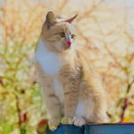
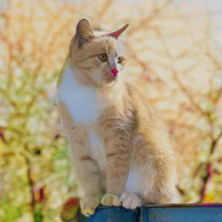

Recent data-driven image colorization methods have enabled automatic or reference-based colorization, while still suffering from unsatisfactory and inaccurate object-level color control. To address these issues, we propose a new method called DiffColor that leverages the power of pre-trained diffusion models to recover vivid colors conditioned on a prompt text, without any additional inputs. DiffColor mainly contains two stages: colorization with generative color prior and in-context controllable colorization. Specifically, we first fine-tune a pre-trained text-to-image model to generate colorized images using a CLIP-based contrastive loss. Then we try to obtain an optimized text embedding aligning the colorized image and the text prompt, and a fine-tuned diffusion model enabling high-quality image reconstruction. Our method can produce vivid and diverse colors with a few iterations, and keep the structure and background intact while having colors well-aligned with the target language guidance. Moreover, our method allows for in-context colorization, i.e., producing different colorization results by modifying prompt texts without any fine-tuning, and can achieve object-level controllable colorization results. Extensive experiments and user studies demonstrate that DiffColor outperforms previous works in terms of visual quality, color fidelity, and diversity of colorization options.
DiffColor mainly contains two stages: 1) colorization with generative color prior that produces accurate and vivid colorization results; 2) in-context controllable colorization that edits the color of the first-stage output in a way that satisfies the target text prompt.


 



A brown dog with red sky

A green boat under red sky

A flower under blue sky


A shark swimming in the sea


A [*] teddy bear doll


A [*] bus on the road


A [*] booth with [*] sky


A [*] cabin under the sky